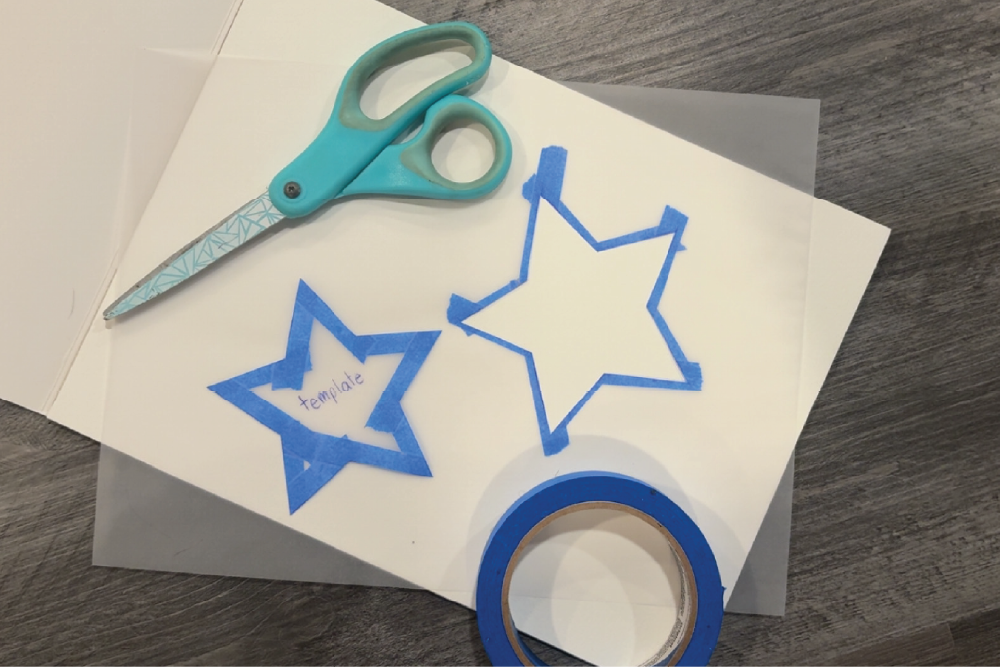

After drawing your design, create a stronger template by placing masking tape over the outline of your drawing. The tape adds extra support, making the template thicker and less likely to tear while you are cutting and tracing it. Once the tape is applied, carefully cut out your design to create a reusable template for your vinyl sticker.